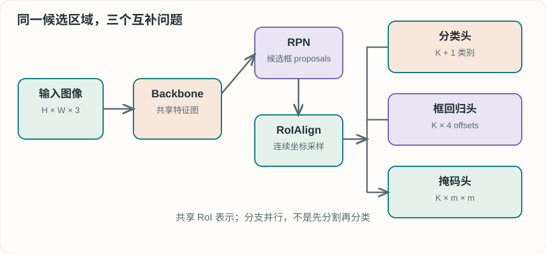
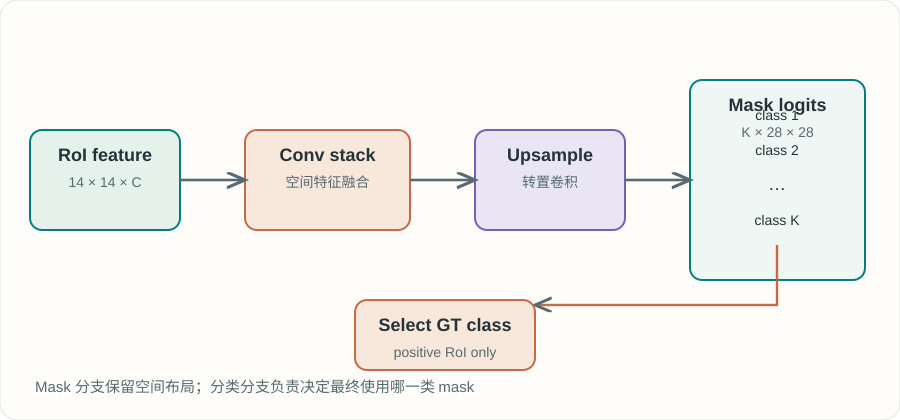
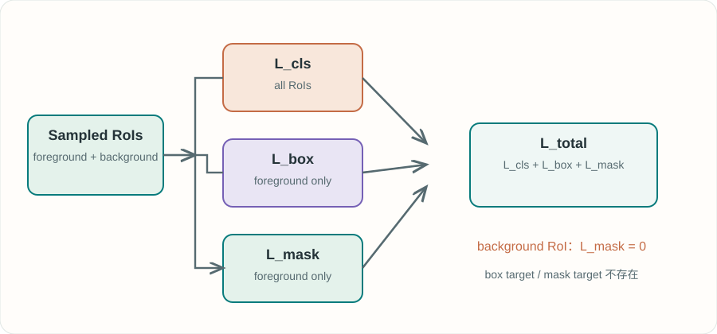

CHAPTER 21 · 实例分割
Mask R-CNN：让检测框长出实例掩码
目标检测告诉我们物体在哪里，语义分割告诉我们每个像素属于什么类别；实例分割还必须回答“这一辆车”和“另一辆车”分别占据哪些像素。Mask R-CNN 在 Faster R-CNN 的第二阶段增加并行掩码分支，并用 RoIAlign 修复特征与原图之间的亚像素错位。
从矩形框到每个对象的像素轮廓
一张街景里可能有三辆车。语义分割会把三辆车的像素都标为 car，却不保证区分它们；检测器给出三个矩形框，仍无法精确表示后视镜、车窗和车身之间的轮廓。实例分割需要为每个对象输出一张独立的二值掩码：同一类别可以出现多份实例，彼此不共享 instance ID。
Mask R-CNN 的关键不是把检测器替换成一个全图分割网络，而是保留 Faster R-CNN 的两阶段骨架：RPN 产生候选框，第二阶段对每个 RoI 共享特征，再并行预测类别、边框偏移和像素掩码。分类回答“是什么”，框回归回答“边界框在哪里”，mask branch 回答“这个候选实例内部哪些像素属于它”。

共享 backbone 与两阶段检测骨架
输入图像先通过 backbone 得到特征图，RPN 在特征图上产生类别无关的候选框。每个 proposal 与特征图一起送入 RoI 特征抽取层；RoIAlign 把大小不一的候选区域映射为固定空间尺寸的张量。第二阶段的分类和框回归头沿用 Faster R-CNN 思路，mask head 则额外保留空间布局，用全卷积结构预测像素级输出。
这三条分支共享同一个 RoI 特征，却拥有不同的监督目标。分类头可以使用全连接层，因为它只需把区域压缩成类别分数；掩码头不能过早丢掉空间结构，因此通常由若干卷积、上采样和逐像素分类构成。原论文给出的 FPN 实例中，掩码头把区域特征逐步上采样到 28×28，再输出每个类别的 mask logits。
RoIAlign：为什么不能把坐标取整
RoIPool 会把图像坐标映射到特征图坐标，再对 RoI 边界取整；随后将区域划分为固定数量的 bins 时，还会对 bin 边界再次量化。分类对小幅平移相对稳健，但像素掩码依赖边界位置：一个采样位置偏移一个 feature cell，就可能把细窄轮廓移到错误像素上。
RoIAlign 不对 RoI 边界和 bin 边界做取整。先按 feature stride 把连续图像坐标映射到特征图，再在每个 bin 内取规则采样点；每个点的特征值通过周围四个格点的双线性插值求出，最后对采样值做 max 或 average 聚合。原论文的实验使用每个 bin 四个采样点，并在后续实验中采用 average pooling。
四个权重由采样点到相邻整数网格的水平、垂直距离决定；它们非负且和为 1。

实现时还要核对 API 的坐标约定：图像坐标与特征坐标的 spatial_scale、是否采用 aligned 坐标偏移、每个 bin 的采样数量和边界外处理都可能影响数值。论文中的概念不等于某个框架 API 的所有默认参数。
掩码分支：K 个类别、每个 RoI 一张候选图
对于 K 个前景类别，原始 Mask R-CNN 的默认 mask head 为每个 RoI 输出 K × m × m 个 logits；常见论文配置取 m=28。每个类别对应一张独立的二值掩码概率图。经过逐像素 sigmoid 后，网络给出“该 RoI 的每个局部位置是否属于该类别”的概率。
为什么不把分类和掩码合成一个多类 softmax？论文刻意把两个任务解耦：分类头负责判断 RoI 类别，mask head 则对每个类别分别预测前景/背景二值掩码。训练某个正 RoI 时，只对其真实类别 k 的 mask 通道计算 BCE，其它类别通道不参与该 RoI 的掩码损失。这样每个像素的掩码目标是二值的，而不是在 K 个物体类别之间做逐像素 softmax 竞争。

多任务损失：分类、框回归与掩码
每个采样 RoI 的总损失由三个任务相加。分类损失和框回归损失沿用 Fast R-CNN；掩码损失是对真实类别 mask 通道计算的平均逐像素二元交叉熵。原论文规定 RoI 与某个 ground-truth box 的 IoU 至少为 0.5 时视为正样本；负 RoI 没有与之对应的实例掩码目标，因此不计算 mask loss。
分类作用于正负 RoI；框回归与 mask 监督只对前景 RoI 有意义。
y 是裁剪到 RoI 坐标系的二值真值 mask；p 是对应类别通道经 sigmoid 得到的概率。

可运行实验：双线性采样与前景门控
第一个小实验在 4×4 特征图的连续坐标处计算双线性插值，验证采样点不必落在整数格点；第二个实验构造三个 RoI，其中一个为背景，只对两个前景 RoI 的真实类别通道计算 BCE。它们验证数学与张量门控，不是完整 Mask R-CNN 训练复现。
import torch
def bilinear_sample(feature, y, x):
h, w = feature.shape
assert 0 <= x <= w - 1 and 0 <= y <= h - 1
x0, y0 = int(x), int(y)
x1, y1 = min(x0 + 1, w - 1), min(y0 + 1, h - 1)
dx, dy = x - x0, y - y0
return (
feature[y0, x0] * (1-dx) * (1-dy)
+ feature[y0, x1] * dx * (1-dy)
+ feature[y1, x0] * (1-dx) * dy
+ feature[y1, x1] * dx * dy
)
feature = torch.arange(16, dtype=torch.float32).reshape(4, 4)
sample = bilinear_sample(feature, y=1.5, x=1.5)
assert torch.allclose(sample, torch.tensor(7.5))
assert sample != feature[1, 1]
print("bilinear sample:", float(sample))import torch
import torch.nn.functional as F
# logits: [RoI, K foreground classes, mask H, mask W]
logits = torch.randn(3, 3, 4, 4, requires_grad=True)
gt_class = torch.tensor([2, 1, 0]) # 0 means background
positive = gt_class > 0
roi_ids = positive.nonzero(as_tuple=True)[0]
class_ids = gt_class[positive] - 1
selected_logits = logits[roi_ids, class_ids]
target_masks = torch.randint(0, 2, (2, 4, 4)).float()
mask_loss = F.binary_cross_entropy_with_logits(selected_logits, target_masks)
mask_loss.backward()
assert selected_logits.shape == (2, 4, 4)
assert logits.grad[2].abs().sum() == 0 # background RoI: no mask gradient
assert logits.grad[0, 0].abs().sum() == 0 # non-target class channel
assert logits.grad[0, 1].abs().sum() > 0
print("foreground-only mask loss:", float(mask_loss))推理后处理与 FPN 变体
推理时先由 RPN 产生 proposals，第二阶段输出类别分数、框偏移和每类 mask。根据最终预测类别选择对应 mask 通道，再把 RoI 局部 mask 映射回预测框的图像区域，并按阈值生成二值实例掩码。一个检测框对应一张实例 mask；同类不同框仍保持不同实例身份。
FPN 版本让不同尺度的 RoI 从合适的金字塔层取特征，改善尺度覆盖；RoIAlign 则保证区域特征采样与图像坐标对齐。原论文还展示了将相同框架扩展到人体关键点检测：将关键点热图作为另一类空间预测头。扩展任务时需要新增与任务匹配的输出和监督，而不是把原 mask head 的语义简单改名。
适用边界与常见误读
- 实例分割不等于全景分割：Mask R-CNN 重点处理可数的 thing 实例，不负责给道路、天空等 stuff 区域完整分区。
- RoIAlign 不等于无损：它修复采样坐标量化，不会恢复 backbone 下采样前已经丢失的所有细节。
- 掩码是 RoI 局部坐标：训练目标要与对应 proposal/ground-truth instance 对齐；把整图 mask 直接拿来与 28×28 logits 比较会产生错误监督。
- 类别索引要一致：背景类通常不占 mask 通道；类别编号映射错误会让正确 RoI 更新错误 mask head。
- 部署成本仍然存在：两阶段 proposal、RoI 特征抽取和多分支输出会带来额外延迟，需在目标硬件上测量。
理解检查：背景 RoI 为什么不计算 mask loss？
因为背景 proposal 没有唯一的实例类别和实例掩码目标。它参与分类学习 background，但没有可监督的对象轮廓。